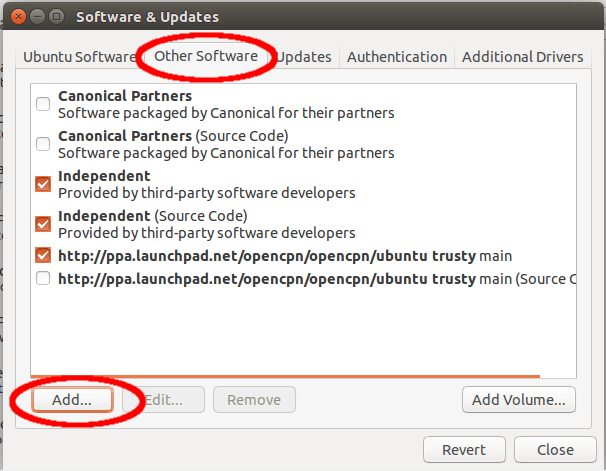
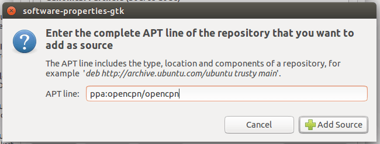

Open a Terminal and enter the following commands:
sudo apt-get install software-properties-common sudo add-apt-repository ppa:opencpn/opencpn sudo apt-get update sudo apt-get install opencpn
===
Using the graphical configuration tools ===
Start the Ubuntu Software Center

From the Edit menu, select Software Sources…

On the Other tab, click on Add… button

In the dialog shown, fill in ppa:opencpn/opencpn (for stable versions) or ppa:bdbcat/opencpn (for beta versions) and click on the Add Source button

Wait until Ubuntu Downloads the necessary information and the progress indicator disappears

From now on you are able to install OpenCPN as any other software. You will also get new stable versions automatically while updating your system.